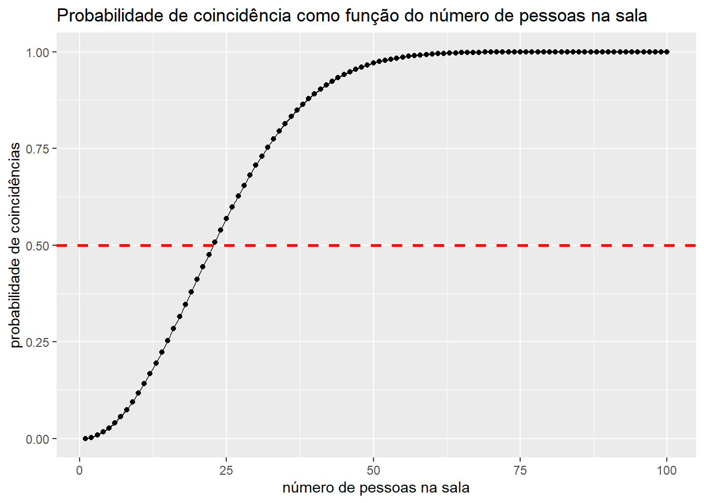
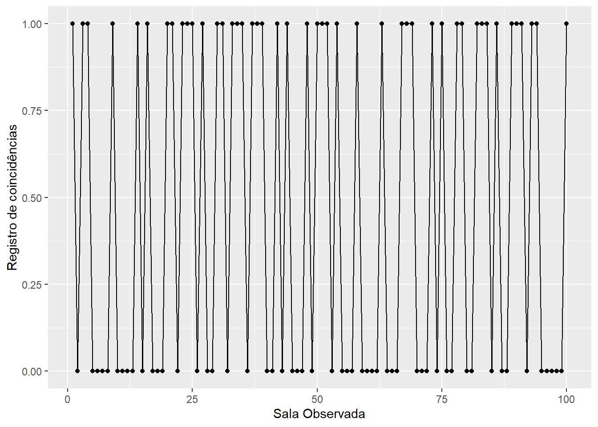
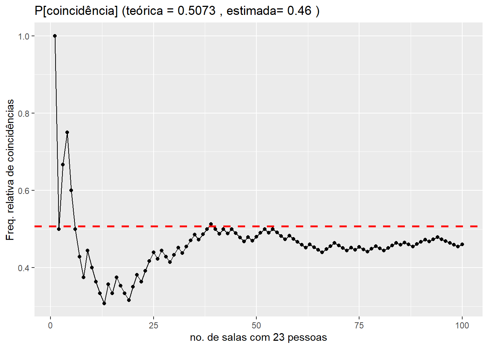
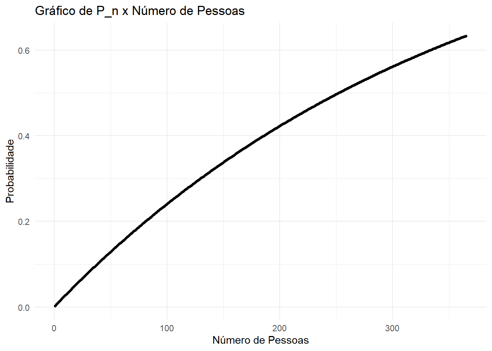
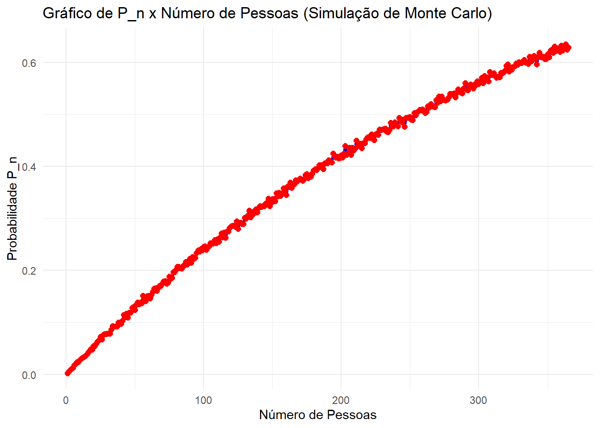

Nesta prática serão apresentadas algumas funções úteis para calcular probabilidades e simular experimentos aleatórios:
- factorial(n): para calcular fatoriais
- choose(n, k): para calcular combinações
O Paradoxo do Aniversário
Suponha que em uma sala haja n pessoas e que os dias de seus aniversários tenham sido sorteados ao acaso dentre os 365 dias do ano (vamos desconsiderar anos bissextos). Qual a probabilidade de que haja pelo menos duas pessoas com aniversário no mesmo dia?
Solução Analítica
O problema foi originalmente publicado por Richard Von Mises em 1939, embora sua formulação seja atribuída a Harold Davenport, cerca de 10 anos antes. A solução é bastante conhecida e uma discussão sobre o problema pode ser encontrada aqui.
Além disso, o R tem uma função nativa que resolve analiticamente o problema. É possível calcular a probabilidade de coincidências para um certo número de pessoas na sala, ou o número mínimo necessário de pessoas na sala para garantir uma probabilidade de haver coincidência (digite ?pbirthday no console).
Vejamos como a probabilidade varia com o número de pessoas na sala:
n_pessoas <-1:100p_coincidencias <-sapply(n_pessoas, pbirthday)aniversarios <-data.frame(n_pessoas, p_coincidencias)# gráfico da probabilidade pelo número de pessoaslibrary(tidyverse)ggplot(aniversarios, aes(x = n_pessoas, y = p_coincidencias)) +geom_line() +geom_point() +geom_hline(yintercept =0.5, linetype ="dashed", color ="red", size =1) +labs(x ="número de pessoas na sala", y ="probabilidade de coincidências",title ="Probabilidade de coincidência como função do número de pessoas na sala")

Veja que, para apenas 23 pessoas, a chance de pelo menos uma coincidência é próxima de 50%:
# número de pessoas na salan_pessoas <-23# calcula a probabilidade de pelo menos uma coincidência para um total de `n_pessoas` pessoas:pbirthday(n_pessoas)
[1] 0.5072972
Este problema é um aparente paradoxo pois, para uma quantidade surpreendemente pequena (n = 23) de pessoas, temos cerca de 50% de chance de observar pelo menos uma coincidência. Você pode até utilizar este resultado para fazer apostas… ou não. Mas, quando há 30 pessoas na sala, veja que a chance de haver pelo menos uma coincidência aumenta para um pouco mais que 70%. A maioria das pessoas certamente custaria a acreditar que entre 30 pessoas muito provavelmente há pelo menos duas que fazem aniversário no mesmo dia.
Que tal tentar resolver analiticamente este problema e comparar com a solução disponível no R?
Solução via Simulação
Vamos agora resolver este problema através de simulação, a fim de encontrar uma aproximação (estimativa) para a probabilidade desejada.
# carrega pacoteslibrary(tidyverse)
O primeiro passo consiste em construir uma função que sorteia datas de aniversários a partir de um número n_dias de dias (ou outros valores numéricos) para um certo número n_pessoas de pessoas.
# função que verifica se há coincidênciasregistra_coincidencia <-function(n_pessoas, n_dias =365){## Argumentos:# n_pessoas: número de pessoas na sala# n_dias: número total de dias que podem ser sorteados# # Saída:# resultado: valor numérico que assume valor 1, se há coincidência e 0, c.c.# inicializa resultado resultado <-FALSE# sorteia uma data de aniversário para cada uma das `n_pessoas` na sala aniversarios <-sample(x =1:n_dias, size = n_pessoas, replace =TRUE)# verifica se há coincidências resultado <-as.numeric(any(duplicated(aniversarios)))return(resultado)}
Podemos utilizar esta função para estimar a probabilidade de coincidência para cenários com diferentes números de pessoas na sala. Iniciemos por n_pessoas = 23. Para isso, vamos conduzir um experimento em que observamos um número Nsalas de salas, cada uma com Npessoas:
# fixa semente de números pseudo-aleatóriosset.seed(1)# simula Nrep salas e registra em quais houve coincidênciasNpessoas <-23# no. de pessoas na salaNsalas <-100# número de salas observadas (tamanho do caminho aleatório)coincidencias <-replicate(Nsalas, registra_coincidencia(Npessoas))# organiza os resultados das coincidências em uma tabelacoincidencias_df <-data.frame(coincidencias)# cria coluna com a ordem dos lançamentoscoincidencias_df$row <-1:nrow(coincidencias_df)# constrói gráfico com a sequencia de coincidenciasggplot(coincidencias_df, mapping =aes(x = row, y = coincidencias)) +geom_point() +geom_line() +labs(x ="Sala Observada", y ="Registro de coincidências")

O gráfico mostra a sequência de ocorrências de coincidências para cada uma das salas observadas. Com base neste caminho aleatório, podemos estimar a probabilidade de haver coincidência, utilizando a definição empírica de probabilidade.
# calcula frequencias relativas de coincidências# da primeira à última sala# (estimativas da probabilidade de coincidências)freq_rel <-cumsum(coincidencias)/1:Nsalas# valor estimado para a probabilidade de ocorrer coincidênciaprob_est <- freq_rel[Nsalas]
Assim, para o total de 100 salas observadas, o valor estimado para a probabilidade de haver coincidência em uma sala com 23 pessoas vale 0.46. O valor teórico para esta probabilidade vale 0.5073.
Vejamos agora o comportamento da frequência relativa de coincidências, conforme aumentamos o número de salas observadas.
# organiza as frequências relativas calculadas em uma tabelafreq_rel_df <-data.frame(freq_rel)# cria coluna com a ordem dos lançamentosfreq_rel_df$row <-1:nrow(freq_rel_df)# constrói gráfico com a frequência relativa de 'COROA'ggplot(freq_rel_df, mapping =aes(x = row, y = freq_rel)) +geom_point() +geom_line() +# adiciona linha tracejada vermelhageom_hline(yintercept =pbirthday(n_pessoas), linetype ="dashed", color ="red", size =1) +labs(x =paste("no. de salas com", n_pessoas, "pessoas"), y ="Freq. relativa de coincidências",title =paste("P[coincidência] (teórica =", round(pbirthday(n_pessoas), digits =5), "," ,"estimada=", round(prob_est, digits =5), ")"))

Replicando o experimento que consiste em observar 100 salas com 23 e registrar a ocorrência de coincidências um grande número de vezes, é possível construir uma distribuição aproximada dos valores estimados para P[coincidência].
PRÁTICA: Um Outro Problema de Aniversário
Suponha que em uma sala haja n_pessoas pessoas e que os dias de seus aniversários tenham sido sorteados ao acaso dentre os 365 dias do ano (vamos desconsiderar anos bissextos). Seja P_n a probabilidade de que haja pelo menos uma pessoa na sala com aniversário no dia 31 de dezembro.
Solução analítica: Encontramos uma expressão matemática para P_n e implementamos esta função no R.
Construímos o gráfico da solução analítica: P_n x n_pessoas.
# Gerar os dados para o gráficon_pessoas <-1:365# Considerando de 1 a 100 pessoasprobabilidades <-P_n(n_pessoas)# Criar um data frame para o ggplotdata <-data.frame(n_pessoas, probabilidades)# Construir o gráficoggplot(data, aes(x = n_pessoas, y = probabilidades)) +geom_line(color ="blue", size =1.2) +# Adiciona a linha azulgeom_point(color ="black", size =1.0) +# Adiciona os pontos vermelhoslabs(x ="Número de Pessoas", y ="Probabilidade", title ="Gráfico de P_n x Número de Pessoas") +theme_minimal() # Aplica um tema minimalista

Encontramos a expressão analítica de n_pessoas(p), em que p é uma probabilidade desejada. Ou seja, queremos saber qual o número mínimo de pessoas na sala que garantem uma probabilidade p de encontrar pelo menos uma que faz aniverário no dia 31 de dezembro.
Encontramos o valor de n_pessoas que faz P_n > 0.9.
p_desejado <-0.9resultado <-ceiling(n_pessoas(p_desejado)) # Arredondar para o próximo número inteiroresultado
[1] 840
Monte Carlo
Refazendo os procedimentos anteriores via simulação de Monte Carlo.
# Definir a função para simulação de Monte CarloPn_simulacao <-function(n_pessoas, n_simulacoes =1000) {# Inicializar contador para o número de coincidências coincidencias <-0# Realizar as simulaçõesfor (i in1:n_simulacoes) {# Sortear os aniversários aniversarios <-sample(x =1:365, size = n_pessoas, replace =TRUE)# Verificar se há alguém com aniversário no dia 31 de dezembroif (any(aniversarios ==365)) { coincidencias <- coincidencias +1 } }# Calcular a probabilidade P_n P_n <- coincidencias / n_simulacoesreturn(P_n)}# Testar a função para um exemplon_pessoas <-840P_n <-Pn_simulacao(n_pessoas)print(P_n)
[1] 0.898
0.898 foi o valor de probabilidade encontrado para um número 840 de pessoas.
# Definir o número de simulaçõesn_simulacoes <-10000# Definir os valores de n_pessoasn_pessoas_values <-1:365# Calcular P_n para cada valor de n_pessoasP_n_values <-sapply(n_pessoas_values, function(n) Pn_simulacao(n, n_simulacoes))# Construir o gráfico usando ggplot2library(ggplot2)data <-data.frame(n_pessoas = n_pessoas_values, P_n = P_n_values)ggplot(data, aes(x = n_pessoas, y = P_n)) +geom_line(color ="blue", size =1.2) +# Adiciona a linha azulgeom_point(color ="red", size =2) +# Adiciona os pontos vermelhoslabs(x ="Número de Pessoas", y ="Probabilidade P_n", title ="Gráfico de P_n x Número de Pessoas (Simulação de Monte Carlo)") +theme_minimal() # Aplica um tema minimalista

# Função para encontrar o menor n_pessoas para o qual P_n > 0.9encontrar_n_pessoas <-function(limite_p, n_simulacoes =1000) { n_pessoas <-1 P_n <-0while (P_n <= limite_p) { P_n <-Pn_simulacao(n_pessoas, n_simulacoes)if (P_n > limite_p) {break } n_pessoas <- n_pessoas +1 }return(n_pessoas)}# Encontrar o valor de n_pessoas para o qual P_n > 0.9n_pessoas_limite <-encontrar_n_pessoas(limite_p =0.9)print(n_pessoas_limite)
[1] 797
Discutindo sobre os resultados obtidos.
A diferença pode ser atribuída à natureza aleatória das simulações. Cada execução do experimento gera resultados ligeiramente diferentes, dependendo do número de simulações realizadas. Embora 1000 simulações forneçam uma boa estimativa, o número exato de pessoas pode variar ligeiramente entre diferentes execuções do código. A precisão da Monte Carlo melhora com o aumento do número de simulações. No entanto, mesmo com 1000 simulações, a estimativa de 799 pessoas (próxima de 840 da solução analítica) é robusta e pode ser considerada suficientemente precisa para a maioria das aplicações práticas.
As diferenças entre as duas abordagens são um reflexo da natureza exata versus aproximada das técnicas. A solução analítica oferece uma garantia teórica mais conservadora, enquanto a simulação de Monte Carlo, ao fornecer uma estimativa prática, pode ser mais eficiente, mas com uma margem de variação. Em situações reais, o uso de Monte Carlo pode ser preferido por sua flexibilidade e eficiência, especialmente em problemas complexos onde a solução analítica pode ser difícil de derivar ou interpretar.